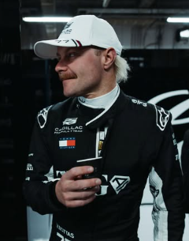

Valtteri Bottas
Valtteri Bottas
Team: Cadillac F1 Team
Team Principal: Gremae Lowdon
Number: 77
Nationality: Finland
Debut: 2013
Born: 28 August 1989
History: Finnish driver Valtteri Bottas enjoyed one of the most successful careers of the hybrid era, winning multiple Grands Prix during his time with Mercedes alongside Lewis Hamilton. Recognized for his qualifying pace, professionalism, and technical contribution, Bottas became one of Formula 1’s most respected team players. Joining Cadillac for its entry into Formula 1, he brought valuable leadership and experience to the ambitious American project as the team sought to establish itself competitively in 2026.
